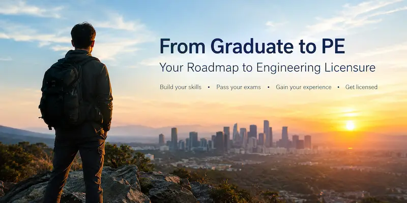

Earn a bachelor's degree in engineering, preferably from an ABET-accredited program.
Take and pass the Fundamentals of Engineering (FE) exam to begin your licensing journey.
Work under a licensed Professional Engineer and gain the required engineering experience. Requirements vary by state.
Choose your engineering discipline and pass the appropriate Principles and Practice of Engineering (PE) exam.
Submit your application, experience records, references, and other required documents to your state licensing board.
Becoming a Professional Engineer takes education, experience, examinations, and commitment. Check your state board's rules for the exact requirements.